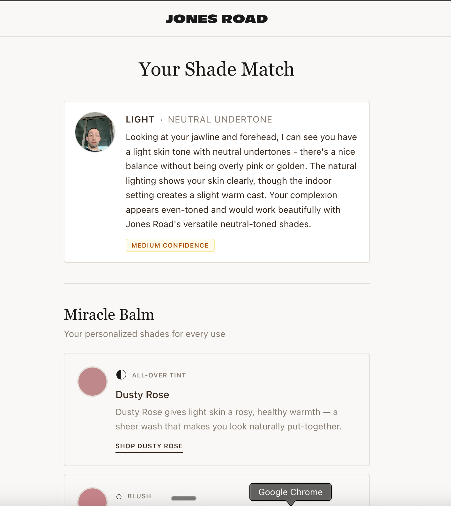

Claude Code
What it is, why it matters,
and how we use it at JRB.
AI went from
answering questions
to doing work.
Cowork and Claude.ai are great at helping you think.
Claude Code actually executes — it reads files, writes code,
searches the web, and ships things.
Three tools. Three jobs.
Claude.ai
Cowork
Claude Code
- Personal chat interface
- Research, writing, Q&A
- Projects + memory
- No external actions
- Shared team AI workspace
- Docs, briefs, brainstorms
- Great for collaboration
- No file access
- Runs in your terminal
- Reads & writes files
- Connects to Slack, Figma, Linear…
- Executes multi-step tasks
An AI that works
alongside you — not
just for coders.
Claude Code runs in your terminal — a text window on your computer. You talk to it in plain English. It reads your files, searches the web, connects to your tools, and executes tasks from start to finish.
You don't need to know how to code to use it. You just need to know what you want.
The key difference
Other AI tools give you answers. Claude Code takes actions — it does the work, not just describes it.
Non-code things it does every day
→ Reads a competitor's site and writes a brief
→ Summarizes a meeting transcript from Granola
→ Pulls your Meta ad data and spots trends
→ Searches Slack for a decision made months ago
→ Drafts a strategy doc from your notes
→ Runs a full workflow with one command
How it all fits together.
Terminal / CLI
The terminal is just a text interface to your computer — like a command line chat window. Claude Code lives here. You type, it responds, and it can run commands on your machine directly.
Think of it like texting your computer.
APIs
An API is how software talks to other software. When Claude pulls your Meta ad data or reads a Slack message, it's using an API — a secure, direct connection between Claude and that platform.
No copy-paste. No screenshots. Direct access.
MCPs
MCP (Model Context Protocol) is the standard that lets Claude connect to external tools — Slack, Figma, Linear, Google Calendar, and more. Each MCP is a plugin that gives Claude new capabilities.
You connect it once. Claude uses it forever.
Put together: You open the terminal, type a request in plain English, and Claude uses APIs + MCPs to pull data from your tools, work with your files, and complete the task — all in one session.
What it can actually do
Research
Competitive analysis, customer interviews, review mining, market research — synthesized in seconds.
Build
Write code, design landing pages, build Shopify sections, ship to staging — end to end.
Connect
Pull from Slack, Linear, Figma, Google Analytics, Meta Ads — all in one conversation.
Automate
Recurring tasks, scheduled reports, alerts — set it and it runs without you.
Audit
QA your own work. Catch issues before they go live. Run standards checks automatically.
Remember
Persistent memory across sessions. It knows your brand, your history, your preferences.
Your computer is
Claude's workspace.
Unlike Cowork or Claude.ai — which only see what you paste in — Claude Code can read and write files directly on your machine.
That means it works with your actual stuff, not copies of it.
No copy-paste. No exports. No context lost.
What it can access
→ Code files & entire repos
→ CSVs, spreadsheets, data exports
→ Design briefs & Notion exports
→ Config files & environment settings
→ Anything on your file system
What it can do with them
→ Read, edit, create, delete files
→ Run scripts & terminal commands
→ Search across thousands of files instantly
Even Meek Mill wants one.
GitHub is like Google Drive for code — but with a full history of every change, by anyone, at any time. Nothing gets lost. Everything is reversible.
Five concepts to know
Branch — a safe copy to work in without touching the live site
Commit — a saved snapshot of changes, with a note on what changed
Pull Request — a request to bring your branch's changes into the main codebase
Merge — approving the PR and combining changes into main
Deploy — pushing the merged code live to the actual website
Why this matters
Claude can ship fast — GitHub is the safety net. Every change is tracked, reviewed, and reversible before it ever touches production.
MCPs: Claude's
superpowers.
MCP = Model Context Protocol. Think of them as plugins that let Claude directly access other tools — no copy-pasting required.
From idea to live site,
one skill at a time.
the hypothesis,
the goal
what customers say,
what to test
CTAs written in
JRB voice
production Liquid
using JRB tokens
catch issues
before staging
merge → live
on site
Skill 01 — Research
Know what's working
before you build.
Give Claude a competitor URL and it reads the entire page — copy, structure, positioning, social proof, CTAs — then outputs a structured audit of what they're doing well and where JRB has an edge.
Used before every new landing page, PDP iteration, or campaign.
What it does
→ Reads the live competitor page
→ Analyzes messaging + structure
→ Maps positioning vs JRB
→ Identifies gaps & opportunities
→ Pipes into copywriter & CRO skills
Skill 02 — Ideation
From insight to
spec in one session.
Takes a CRO insight or customer pain point and turns it into a fully specced section — with copy, layout direction, and success metrics defined before a single line of code is written.
What it does
→ Reads customer intelligence
→ Defines the friction it's solving
→ Proposes layout + copy direction
→ Sets ICE score + hypothesis
→ Outputs a build-ready brief
Skill 03 — Build
Design to live site,
no dev handoff.
Claude loads the full JRB design system — fonts, colors, components, rules — then converts an HTML prototype into production-ready Shopify Liquid, using the exact same tokens the rest of the theme uses.
The pipeline
→ Spec → HTML prototype
→ Design system loaded into context
→ Converted to Liquid + SCSS
→ Pushed to staging theme
→ Ready for QA
Skill 04 — Quality
Ship only what's
ready to ship.
Before any code goes to the EcomExperts repo, Claude audits it against JRB's standards — catching critical issues, accessibility problems, and broken patterns before they ever touch production.
What it catches
→ Critical: blocks the PR
→ High: must fix before merge
→ Warning: flag for review
→ Updates section registry
→ Then hands off to /jrb-theme-push
Dictate a problem.
Approve a plan.
Watch it work.
The prompt I use (via Wispr Flow)
"Hey — here's a problem I'm dealing with. Here are some thoughts I have about how to fix it. What do you think? Is this possible? What are we actually able to do here? Can you build me a plan?"
Wispr Flow lets you dictate anywhere on your screen — no typing required. Just talk to Claude the way you'd talk to a smart colleague.
The four-step loop
Describe the problem — give context, share your thinking, ask what's possible
Claude builds a plan — step by step, before writing a single line
You approve, redirect, or push back — you stay in control of the direction
Claude executes — reads files, runs tools, ships the work
Getting unstuck.
And going meta.
When you don't know what to do
If you hit something confusing in the terminal — or anywhere — just take a screenshot and drop it in. Say:
"Hey, what does this mean? Walk me through it step by step."
"Do as much as you can — open the browser if you need to."
Claude can open a browser, navigate pages, click things, and complete tasks visually — not just in code. If it can't do it automatically, it'll walk you through each step manually.
The meta skill
If you want to do something with Claude, ask Claude how.
If you want Claude to always do something, ask it to build you a skill for it.
There's a skill that builds skills
Run /skill-creator and describe the workflow you want. Claude will write the skill file itself — so next time, it's one command.
The rule of thumb
→ Want to do something? Ask Claude if it's possible.
→ Do it often? Ask Claude to build a skill for it.
→ Getting stuck? Screenshot it. Claude can see what you see.
Session memory:
the unlock most people miss.
/handover
Run this at the end of any important session. Claude writes a full summary of what was done, what was decided, and what's next — formatted so the next session can pick up exactly where you left off.
/resume
Run this at the start of a new session. Claude loads the handover doc and has full context instantly. No re-explaining, no lost work.
/context
Run this mid-session to see how much context you've used and what Claude currently knows about your project. Good to check on long sessions.
Context compacting
Long sessions auto-compress. Claude keeps what matters and discards the noise — so your context window never runs out mid-project.
Things we actually built.

Shopify Sections & PDPs
Buybox, quantity selector, shade swatches, trust bars — built and pushed to staging end to end.

Open Casting App
AI scoring 0–100, photo + fit analysis, persona tagging, team ratings, natural language search.

AI Shade Matching Tool
Upload a selfie, get your skin tone analyzed and matched to the right JRB shades — with confidence scoring.
ListenLabs Junip OuterSignal Richpanel
REST API MCP MCP REST API
│ │ │ │
└─────────┴────────┴────────────┘
▼
CUSTOMER INTELLIGENCE MD
shared/customer-intelligence
│
/jrb-cro · /jrb-copywriter
/jrb-video-hooks · /simulate-research
Customer Intelligence System
5 data sources → one truth file. Powers CRO, copywriting, video hooks, and simulated research automatically.
Your turn.
Open Claude Code. We're going to do one thing together.
Exercise: Run a live competitive page audit
Pick a competitor landing page — one you've looked at before and have opinions on.
Run /competitive-page-audit and give it the URL. Watch Claude read the live page and synthesize what they're doing, what's working, and where JRB has an edge.
This is something Cowork cannot do.
This was Session 1
of many.
Next sessions: live skill demos, building your own workflows,
and connecting Claude to the tools you already use every day.